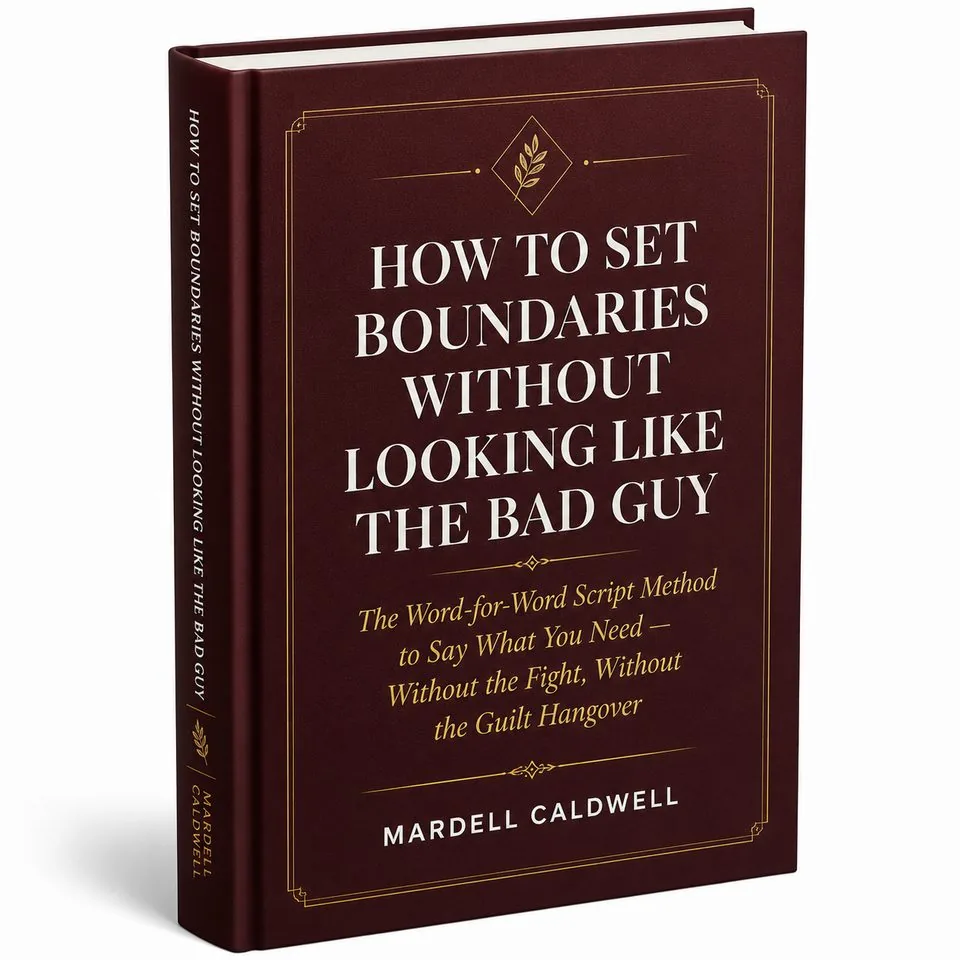
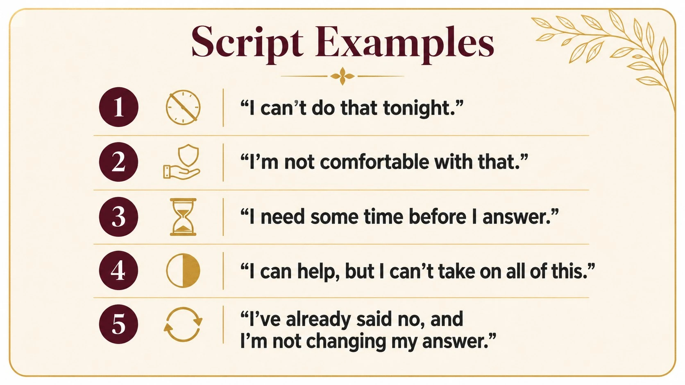
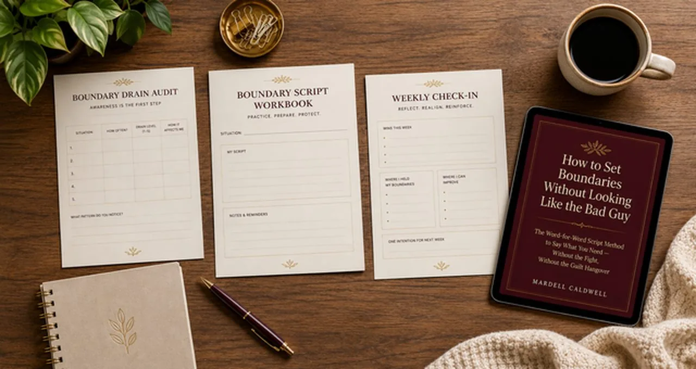
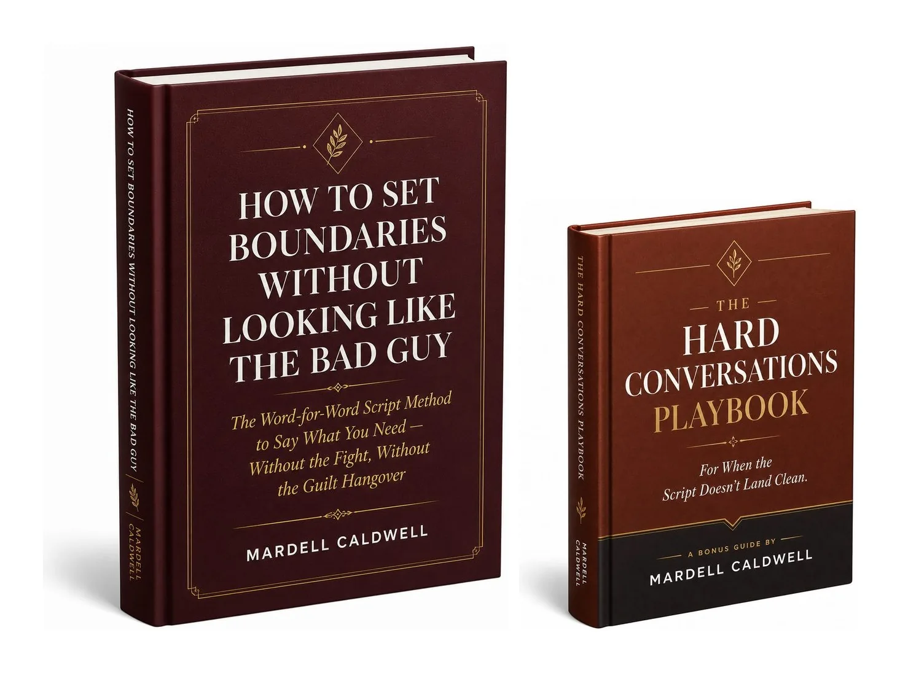
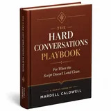

The Word-for-Word Script Method to Say What You Need — Without the Fight, Without the Guilt Hangover
This isn't about becoming someone who stops caring what people think. It's about finally having the words that let you say no without starting a war — or apologizing for the rest of the week.
GET INSTANT ACCESS — $2730-Day Money-Back Guarantee · Instant Digital Download · Word-for-Word Scripts Included
You feel the "no" before you say it.
Your partner asks for something — cover a shift, skip the thing you actually wanted to do, let something slide again — and some part of you already knows you don't want to. But the words that come out aren't "no." They're a paragraph. An apology wrapped around a maybe, wrapped around a "well, I guess if it's really important to you."
You say yes. You agree to the plan you didn't want.
And later — in the shower, in the car, lying awake — you're resentful. Not at anyone in particular. Just tired of being the person who always bends.
You're not confused about what a boundary is. You know exactly what you'd want to say. The problem is what happens the moment you try to say it.
So you looked it up. "How to set boundaries in a relationship."
You got the same advice everyone gets: know your worth. Just say no. Stop over-explaining.
You tried it once. Said something short and direct, the way the article told you to. And it landed wrong — flat, cold, like you'd swapped out for a different person mid-conversation. Either it turned into a fight, or you watched your partner's face do that thing where they look a little hurt, a little confused, and you spent the next ten minutes taking it all back.
So next time, you went back to over-explaining. At least that version didn't feel like you were picking a fight.
Here's the part nobody tells you: it's not that you don't know you should set boundaries. It's that every script you've been handed makes you sound like the villain — controlling, cold, selfish — when all you wanted was to say what you actually needed.
The problem was never your boundary. It was the words around it.
"Just say no" isn't a script. It's an instruction with no language attached — so under pressure, in the actual moment, you either freeze, over-explain, or say yes anyway.
The Boundary Script Method turns that into a repeatable sequence: catch the moment you're about to say yes when you mean no, name what you're actually protecting, choose the script built for that situation, say the limit clearly, and stop before the explanation turns into an apology.
Introducing:

A step-by-step script method — plus the exact language — for the conversations you actually have.
This is that process, made usable: a short diagnostic, a workbook of adaptable scripts for your specific situations, and a five-minute weekly habit that keeps it from slipping.
Find exactly where it's happening — and the fear behind it.
In one sitting, you'll map the specific moments you say yes when you mean no, and name what you're actually afraid will happen if you don't. Most people finish this and realize the pattern is smaller and more specific than it felt — a handful of recurring situations, not their whole personality.
Ready before the next conversation happens.
You don't start from a blank page. You pick the situation you're facing, fill in the specific details, adjust the wording until it sounds like you, and you'll have a sentence ready before the next conversation happens.
Scripts for situations like:
(Illustrative — the Boundary Script Workbook covers these and other recurring situations.)

Five minutes to catch backslide before it becomes the pattern again.
A short weekly check that catches the moment you start slipping back into old habits — before a month goes by and you're right back to over-explaining everything.
All tools are delivered together in one workbook — printable or digital. Use it on your phone, your laptop, or at your kitchen table.

My name is Mardell.
I used to say yes when I meant no. Not because I wanted to, but because I was terrified of what saying no would make me look like.
For years, I was the girlfriend who apologized for having needs. I'd agree to plans I didn't want, then seethe in silence. I'd try to voice a boundary, but it came out as a paragraph of justification — "I'm so sorry, I know this is weird, but maybe if…" — and by the end, I felt smaller, not clearer.
The turning point came on a Tuesday night. My partner asked if I could cover his shift at his side hustle. I was exhausted. I said yes anyway. Later, I cried in the shower, resentful at him and ashamed of myself. I realized: my problem wasn't that I didn't know I should set boundaries. It was that every script I'd tried made me feel like the villain — controlling, cold, selfish.
So I stopped looking for generic advice and started testing language that actually worked in real conversations. Not "just say no," but phrases that held my ground without starting a fight. I learned to lead with warmth, name my limit clearly, and skip the over-explaining. The first time I tried it, my hands shook. But my partner didn't push back. He just said, "Okay, thanks for telling me."
That moment became the foundation of The Boundary Script Method. It's not about being assertive for the sake of it. It's about having words that let you honor yourself without losing connection.
I'm not a therapist. I'm someone who hated the person I became when I couldn't say no — and found a way out that didn't blow up my relationship. If you're tired of the guilt hangover, this is for you.

How to Set Boundaries Without Looking Like the Bad Guy — complete guide + Boundary Script Workbook ($27 value)
BONUS: The Hard Conversations Playbook
For When the Script Doesn't Land Clean

Companion mini-guide for when your partner pushes back, gets defensive, or tests the same boundary again later ($17 value)
| Core guide + Boundary Script Workbook | |
| Bonus: The Hard Conversations Playbook | |
| Total Value | |
| Your Price Today | $27 |
30-Day Money-Back Guarantee · Instant Digital Download
Try The Boundary Script Method for 30 days. If you use it and your next hard conversation still goes exactly the way it always has, email me and I'll refund every cent. No hoops. No conditions.
"I've tried setting boundaries before. It just started a fight."
Most boundary advice gives you the instruction ("just say no") with no actual language attached — so under pressure, you either freeze or over-explain. This gives you the exact words, built to hold your ground while keeping the warmth in the room. That's the difference.
"Will this make me seem controlling or cold?"
That's the exact fear this method is built around, not something it ignores. Every script leads with warmth and names the limit clearly — no ultimatums, no coldness, no "villain" framing. You stay yourself. You just stop over-explaining.
"What if my partner pushes back anyway?"
That's exactly why The Hard Conversations Playbook is included. It's the follow-up for when the first script doesn't land clean — defensiveness, pushback, or the same boundary getting tested again later. You don't freeze. You follow the sequence.
"What if $27 is a stretch right now?"
If it is, this was built for exactly that kind of tight moment. There's a 30-day guarantee — if it doesn't change how these conversations go, you get every cent back.
You don't have to choose between being honest and being kind.
You don't have to rehearse a fight in your head three days before it happens.
You just need the words — the ones that let you hold your ground and still stay in the room.
I'm not a therapist. I'm someone who found a way out that didn't blow up my relationship. If you're tired of the guilt hangover, this is for you.
GET INSTANT ACCESS — $2730-Day Money-Back Guarantee · Instant Digital Download